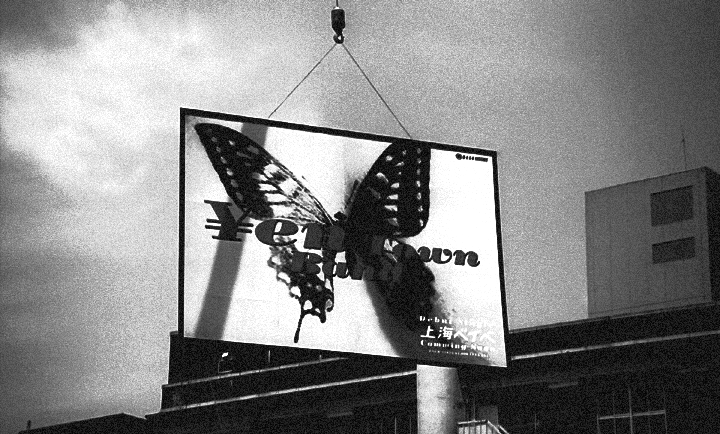
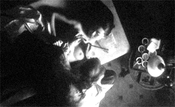
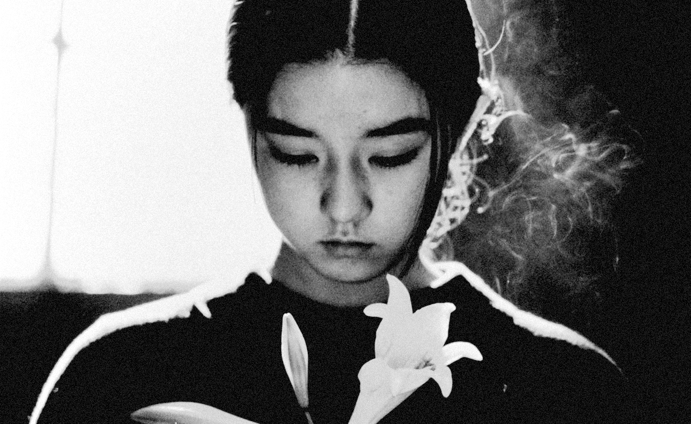

Specimen No. Ⅴ | Written by Maya Lee
Yen-Town is a fictional city in the film. As the Japanese economy boomed, immigrants from various countries flocked to Japan in search of work, giving rise to Yen-Town. Known to the Japanese simply as Yen-Town, these outsiders lead lives marked by discrimination, poverty and crime. The girl who had been wandering without even a name given by her parents meets Griko, a prostitute from Shanghai. Taking the name Ageha, she dreams of transforming from a caterpillar into a butterfly whilst living a precarious existence amongst the residents of Yen-Town.

In < Swallowtail Butterfly >, a record of survival, blooming amidst the decay and poverty of Yen-Town.
The scene in which Agheha has a tiger swallowtail butterfly tattooed on her chest is the film’s most symbolic ritual.
The doctor tells Agheha that a tattoo nurtures life within the body, and that it can alter one’s character and change one’s destiny.
He tells her it is a rebirth, and Agheha has a butterfly shaped like a swallow’s tail tattooed on her chest.
As the tattoo artist, says,
for her, the tattoo is not merely a pattern etched onto her skin, but the beginning of an existential metamorphosis that breathes new life
into a body that had lost its identity and turns her fate upside down. As a child, while her mother worked as a prostitute, Ageha had tried
to catch a butterfly that flew into the room to show it to her. In her innocent haste, she accidentally crushed it against the window.
After her mother died, Ageha’s life seemed to have stopped at that very moment of death.
But now, she revives that dead butterfly upon her chest,
turning it into the engine that will propel her toward a new world.

Ageha, seeking rebirth by having a butterfly tattooed on her chest.

For Agheha, this butterfly functions as a painful declaration of self, necessary to break free from the vast cocoon that is Yen Town. Her metamorphosis unfolds amidst the sacrifice of others and the greed of capital; as the film progresses, her tattoo becomes increasingly vivid against a backdrop of rampant violence and murder. This can be interpreted as a cruel directorial choice, implying that as Agheha sheds her caterpillar’s skin and establishes her self, the world around her—which once protected her—crumbles and dies. Ultimately, the butterfly etched upon Ageha’s chest serves as a record of survival—both fragile and resilient—as she desperately sheds her skin within this polluted city. ⁋